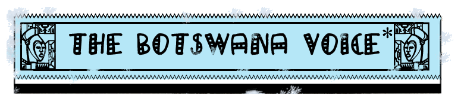
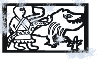

Mais ce batifolage amoureux ne comble pas son désir d'aventure."
"Capable de tuer un crocodile d'un seul coup de feu dans le noir (et après de lui découper l'estomac pour y retrouver une pièce à conviction)
Mma Ramotswe tremble de peur
quand elle entend des bruits la nuit. Mais c'est un détail qu'elle
ne dévoile pas à ses clients, bien sûr?
A chacun d'entre eux, ou presque,
elle parvient à fournir des renseignements précieux. Les rares fois où elle échoue, elle refuse d'être payée. Juste une question de principe."
d'abeilles, des milliers et des milliers de souvenirs, d'odeurs,
de lieux, de petites choses qui nous arrivent et nous reviennent sans
qu'on s'y attende pour nous rappeler qui nous sommes. Et qui suis-je moi
? Je suis Precious Ramotswe, citoyenne du Botswana, fille d'Obed Ramotswe,
qui est mort parce qu'il avait été mineur et qu'il n'arrivait
plus à respirer. Sa vie n'a été consignée
nulle part : qui se préoccupe d'écrire la vie des gens ordinaires
? »
L'agence de
Mma Ramotswe
"L'Ouverture de l'agence suscita un intérêt considérable
parmi le public. Mma Ramotswe eu droit à une interview sur RADIO
BOTSWANA et un article plus satisfaisant sur LE BOTSWANA NEWS, qui attirait
l'attention sur le fait qu'elle était la seule femme détective
privée du pays. L'article fut découpé, photocopié
et exposé en évidence dans un petit cadre, à côté
de la porte d'entrée de l'agence."
Le Botswana,
un modèle pour l'Afrique Alexander McCall Smith a choisi
le Botswana pour cadre de ses romans parce qu'il représente, à
ses yeux, ce à quoi tous les pays africains devraient aspirer :
un pays bien géré, bien administré et attentif aux
droits de l'homme. Une situation qui n'est pas forcément celle
des voisins de cet État de l'Afrique australe, s'étendant
en majeure partie sur le désert du Kalahari : l'Afrique du Sud,
le Zimbabwe, la Namibie, la Zambie ou l'Angola. C'est également
une occasion pour l'auteur de faire découvrir au lecteur un autre
visage de l'Afrique, loin des guerres et désastres.
Une citation de Mma Ramotswe
«Nous n'oublions rien, pensait Mma Ramotswe. Nos têtes sont
peut-être étroites, mais elles sont emplies de souvenirs,
comme le ciel s'emplit de nuées

Mma Ramotswe
détective, n°3573
Les larmes de la girafe, n°3574
* La voix du
Btswana - ** Le journal du Btswana le 1er novembre
© Alexander McCall Smith, 1998. | © Editions 10/18, département
d'Univers Poche, pour la traduction française, 2003.
Tous droits réservés. Toute reproduction, même partielle,
par quelque procédé que ce soit, est interdite.